Valve Body and Wiring Harness Removal
Valve Body and Wiring Harness Removal
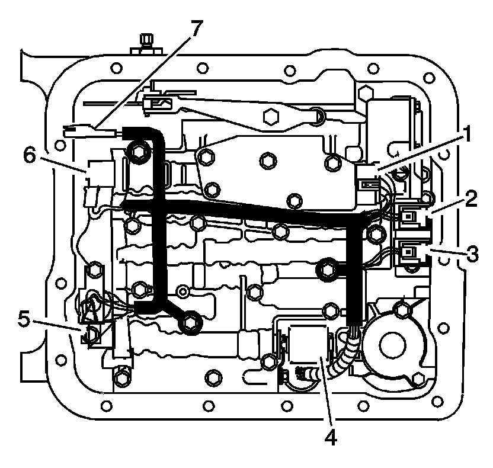
1. Remove all electrical connectors (1-6) from the electrical components.
For transmissions with input speed sensors, disconnect the electrical connector (7).
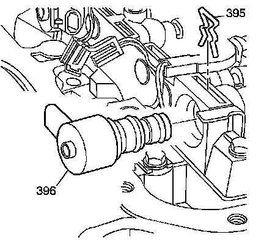
2. Remove the torque converter clutch pulse width modulation (TCC/PWM) retainer clip (395).
3. Remove the TCC/PWM solenoid (396).
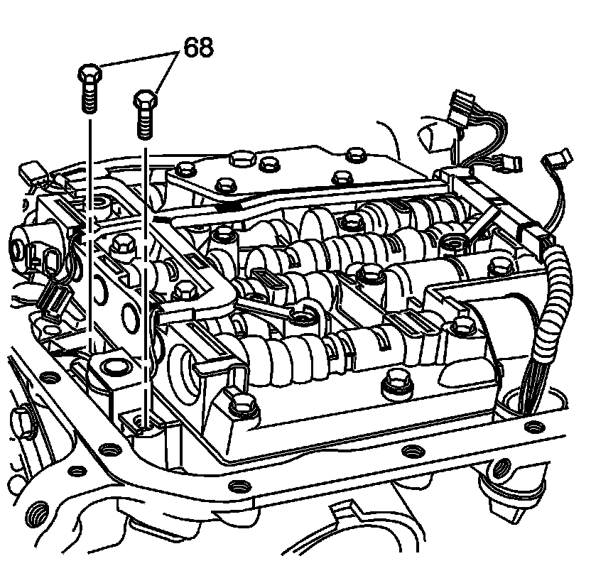
4. Remove the TCC solenoid bolts (68).
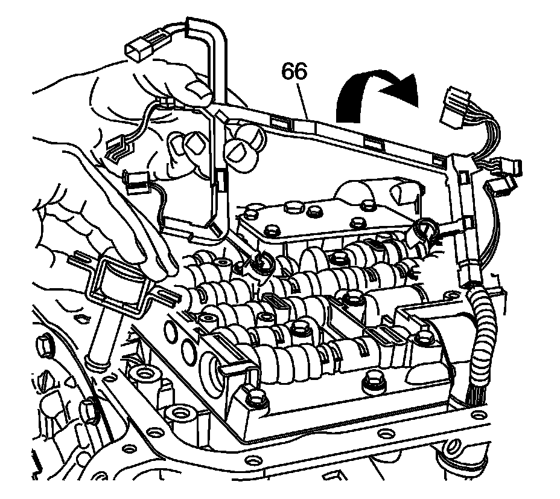
5. Remove the TCC solenoid and wiring harness (66). Turn the wiring harness over so that it hangs over the side of the transmission.
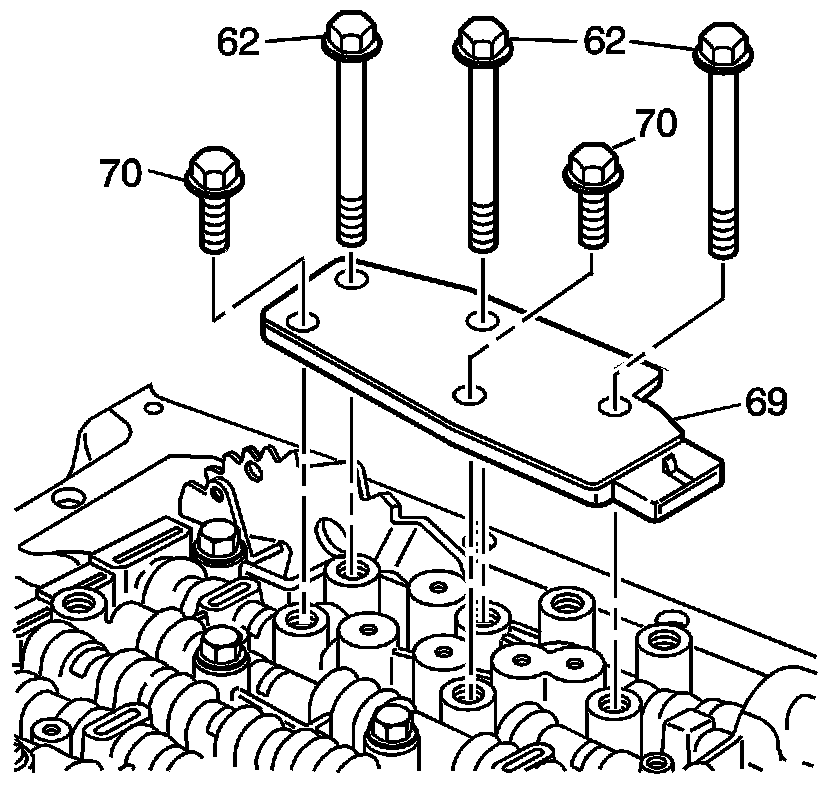
6. Remove the transmission fluid pressure (TFP) manual valve position switch assembly bolts (62, 70).
7. Remove the TFP manual valve position switch (69).
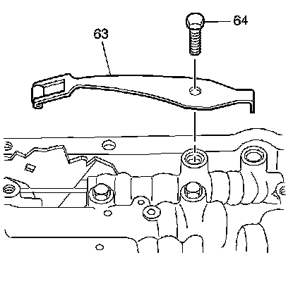
8. Remove the manual detent spring bolt (64).
9. Remove the manual detent spring assembly (63).
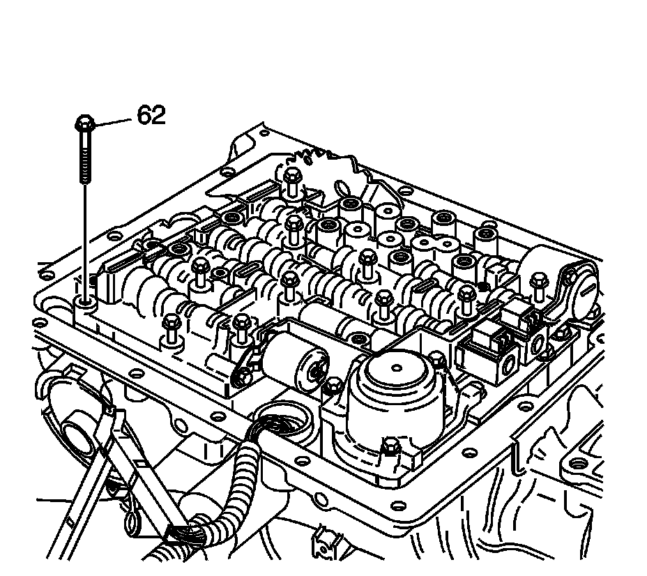
10. Remove all valve body bolts (62).
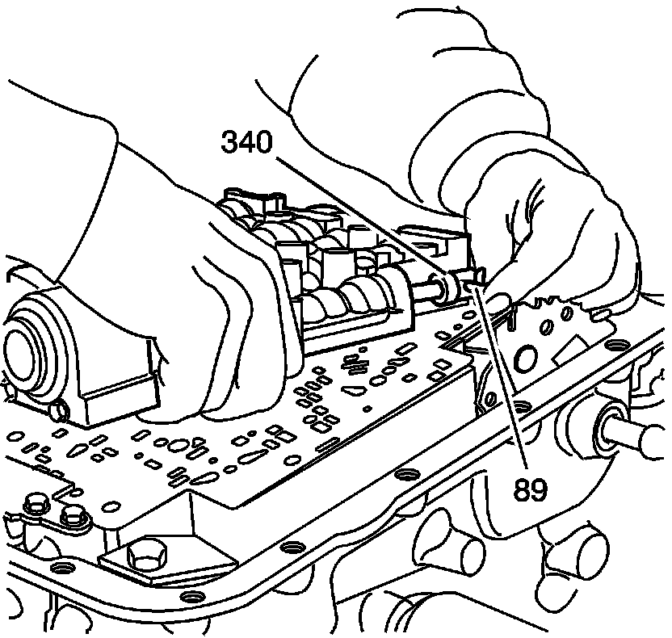
11. Lift the valve body carefully so that the checkballs remain on the spacer plate in the correct location. While lifting the valve body, disconnect the manual valve link (89) from the manual valve (340).
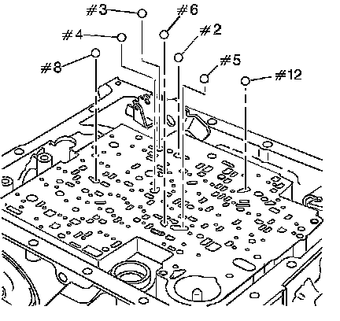
Notice: Do not use a magnet in order to remove the control valve body ball check valves. This may magnetize the control valve body ball check valves, causing metal particles to stick to them.
Important: Some models do not use a #5 ball check valve.
12. Remove the 7 valve body ball check valves (2-6, 8, and 12).
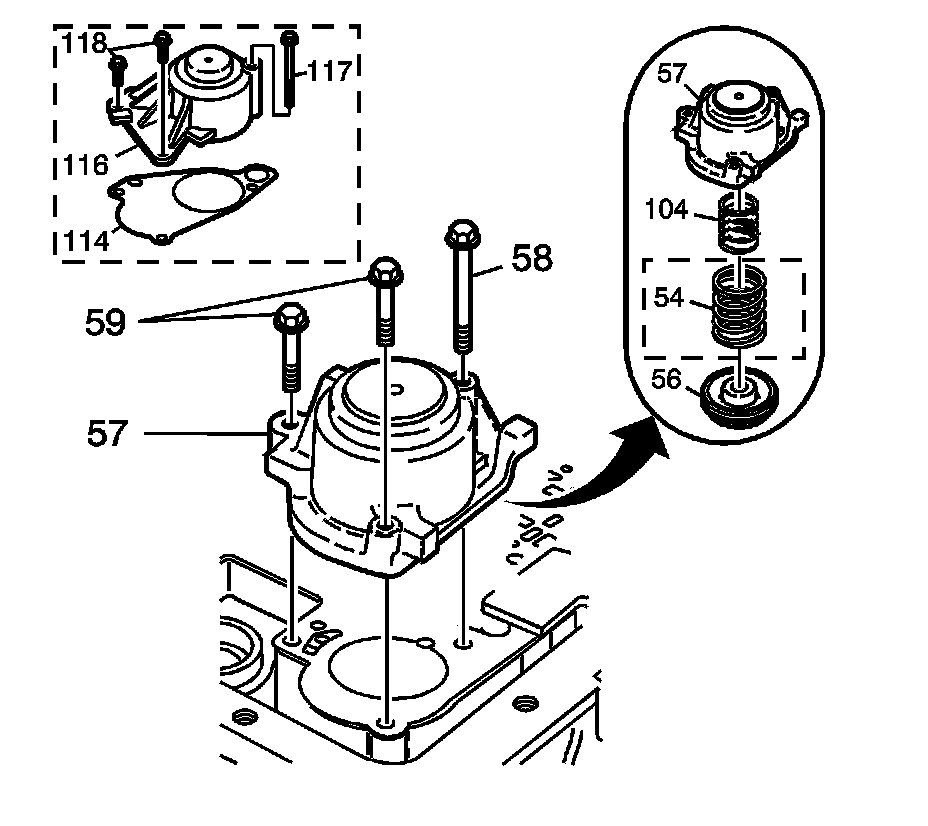
13. Remove the accumulator cover bolts (58, 59 or 117, 118).
14. Remove the 1-2 accumulator cover and pin assembly (57) or 1-2 accumulator cover assembly (116), and gasket (114).
Important: Some models do not use an outer 1-2 accumulator spring (54).
15. Disassemble the 1-2 accumulator assembly (54, 56, 57, 104).

16. Remove the spacer plate support bolts (77).
17. Remove the spacer plate support (53 or 113).
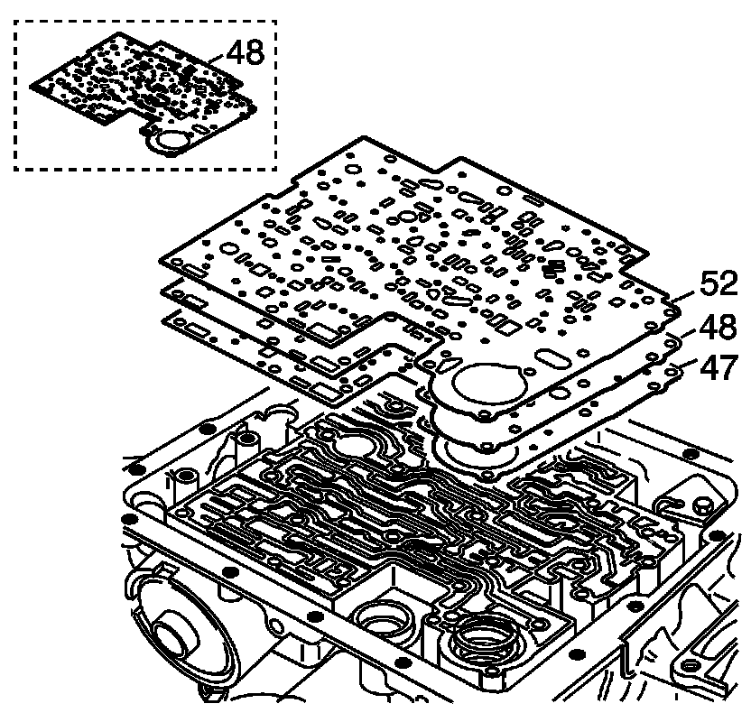
Important: Some models use a bonded spacer plate (48). Do not reuse the bonded spacer plate. Replace with a NEW bonded spacer plate.
18. Remove the valve body gasket (52), the valve body spacer plate (48) and the case gasket (47).
Discard gaskets. Do not reuse.
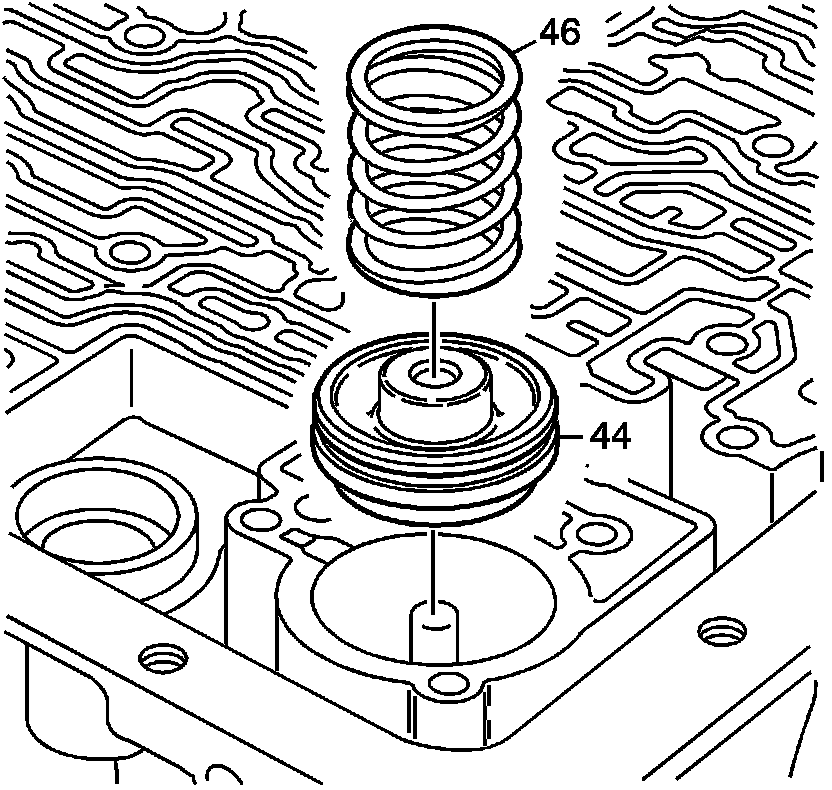
Important: Some models do not use a 3-4 accumulator spring (46).
19. Remove the 3-4 accumulator spring (46) and the 3-4 accumulator piston (44).
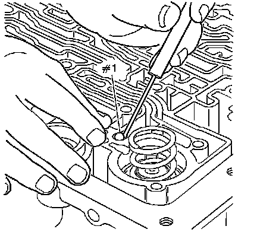
Notice: Do not use a magnet in order to remove the control valve body ball check valves. This may magnetize the control valve body ball check valves, causing metal particles to stick to them.
20. Remove the #1 case ball check valve.